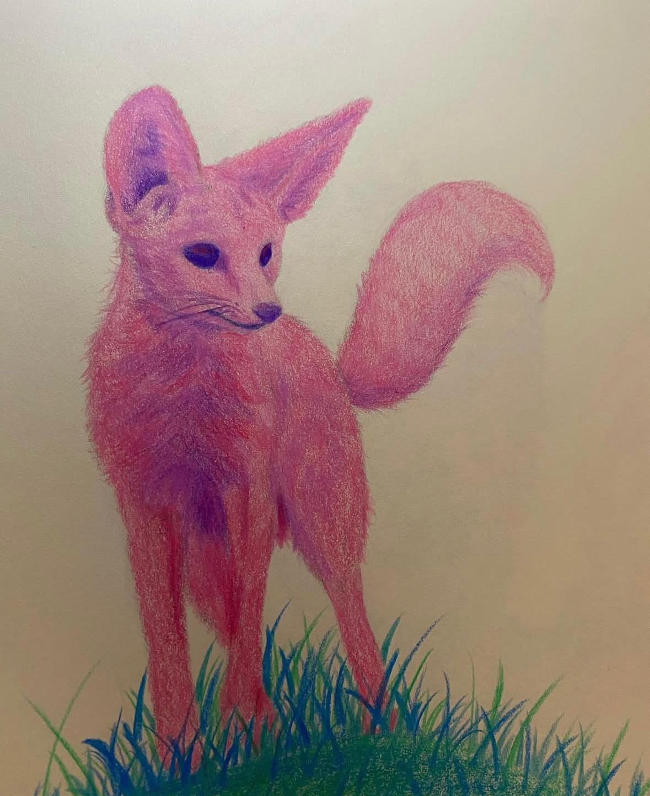
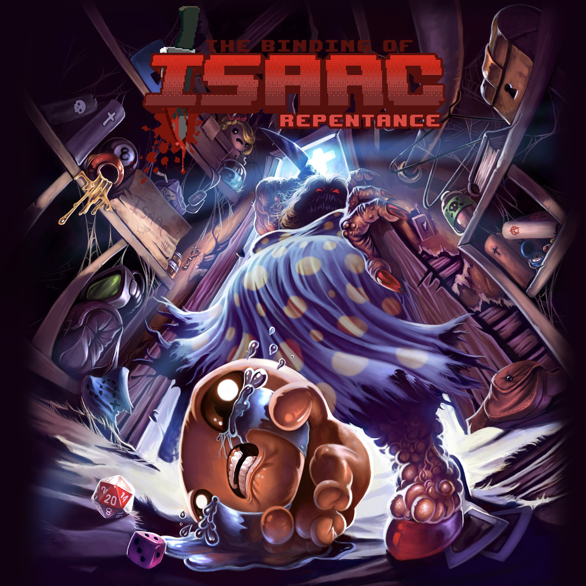

Sono sempre stato appassionato
dall'arte, sin da bambino, in particolar modo dal disegno a mano libera,
siccome ho sempre amato la libertà e le possibilità narrative infinite che offre.
Ogni volta che avevo un momento libero finivo per inventarmi nuovi personaggi, nuove storie, nuovi mondi,
l'unico freno era la mia immaginazione.
Col tempo il disegno è diventato una vera e propria valvola di sfogo
per me, essendo l'unica cosa che mi teneva davvero compagnia in un contesto in cui mi era molto difficile crearmi amicizie.
Ancora oggi mi piace sperimentare, anche in campi diversi dal disegno tradizionale, come l'animazione o
la modellazione 3D.
Cliccando qui
è possibile vedere il profilo instagram dove ho caricato alcuni dei miei disegni.

Ho sempre amato il suono melodico del pianoforte, ma mi sono appassionato effettivamente alla musica
circa 4 anni fa.
Ho frequentato una scuola di musica vicino a me per 2 anni circa dove ho imparato le basi della musica classica ed ho partecipato
con loro a 3 saggi, nei quali ho suonato principalmente brani di
Mozart e Bach da solista.
Purtroppo ho dovuto interrompere lo studio della musica dopo essermi iscritto all'università per incapacità
di mandare avanti tutte e due, ma recentemente ho ripreso a studiarla da autodidatta riuscendo con successo
ad imparare il Tema Musicale di Mipha
da The Legend of Zelda: Breath of the Wild.
Mi è sempre piaciuto giocare ai videogames, in particolare recentemente mi sono affezionato al genere dei
rogue-like con titoli quali The Binding of Isaac
, Enter the Gungeon, Mewgenics ed altri, ma apprezzo molti generi.
I miei titoli preferiti sono Hollow Knight, Nier Automata ed il
sopracitato The Binding of Isaac.
Questa mia passione iniziò da mio zio, un patito di videogiochi con cui da piccolo trascorrevo pomeriggi a
giocare e discutere delle nuove uscite o di eventi riguardanti vari titoli.
